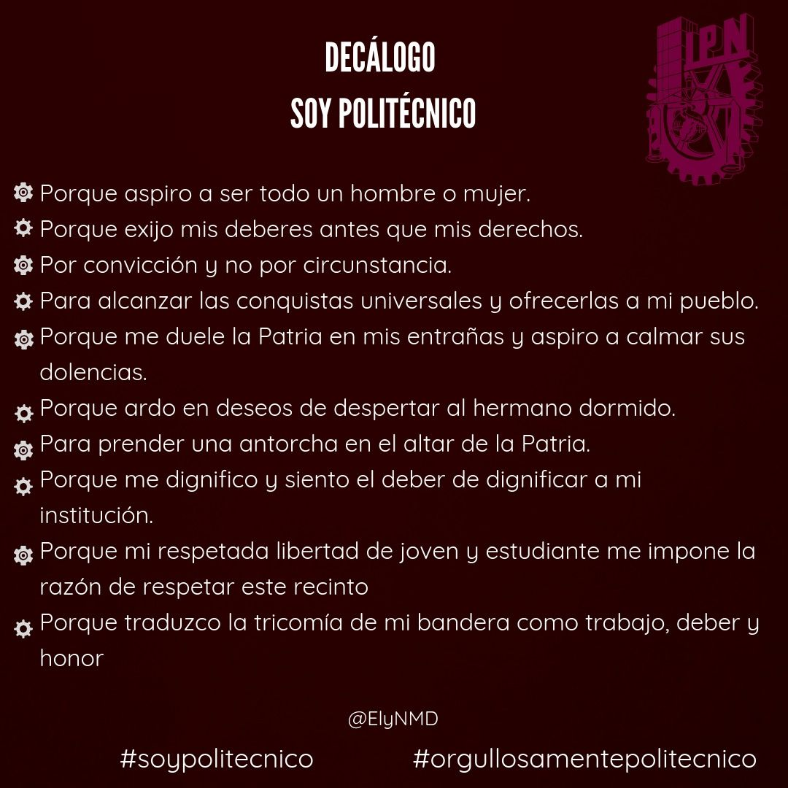
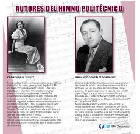
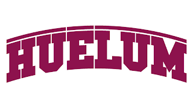

El Instituto Politécnico Nacional (IPN) es una de las instituciones educativas más grandes y prestigiosas de México. Fundado en 1936, el IPN ofrece una amplia gama de programas de estudio en áreas técnicas, científicas, sociales y humanísticas. Su misión principal es la formación de profesionales altamente calificados que contribuyan al desarrollo científico, tecnológico, económico y social del país.
El IPN cuenta con diversas unidades académicas distribuidas en la Ciudad de México y en otras partes del país, así como centros de investigación y desarrollo tecnológico. Ofrece programas de nivel medio superior (como bachillerato técnico) y programas de nivel superior (licenciaturas, ingenierías, maestrías y doctorados), así como educación continua y cursos de capacitación.
Entre sus institutos más destacados se encuentran la Escuela Superior de Ingeniería Mecánica y Eléctrica (ESIME), la Escuela Superior de Cómputo (ESCOM), la Escuela Superior de Economía (ESE), la Escuela Superior de Medicina (ESM), entre otros.
El IPN es reconocido por su excelencia académica, investigación de vanguardia y contribuciones al desarrollo tecnológico e industrial de México.
El "Decálogo del IPN" se refiere a los principios fundamentales que guían la filosofía y el funcionamiento del Instituto Politécnico Nacional (IPN), una institución educativa pública de México.
Principios se establecieron en los primeros años de existencia del IPN y han sido parte integral de su identidad desde entonces.
principios incluyen valores como la autonomía, la democracia, la gratuidad de la educación, la excelencia académica, la vinculación con la sociedad, entre otros.
Para mas informacion del Decalogo da click en la imagen
El himno del Instituto Politécnico Nacional (IPN) es una composición musical que representa los valores y la identidad de esta institución educativa. Fue escrito por Rafael Petrisant y la música fue compuesta por Manuel M. Ponce en 1925. El himno del IPN es un símbolo de orgullo para la comunidad estudiantil y docente de esta institución en México.
Para mas informacion dar click en la imagen
La "porra del IPN" se refiere a un cántico o grito de apoyo utilizado por los estudiantes del Instituto Politécnico Nacional (IPN), una de las principales instituciones de educación superior en México. Es una expresión de identidad y orgullo institucional, comúnmente utilizada en eventos deportivos, manifestaciones estudiantiles u otras ocasiones donde se quiere mostrar unidad y animar a los compañeros. La porra puede variar dependiendo del contexto y la creatividad de los estudiantes, pero generalmente involucra consignas o frases que destacan el espíritu y la pertenencia a la comunidad del IPN.
Para mas informacion dar click en la imagen
